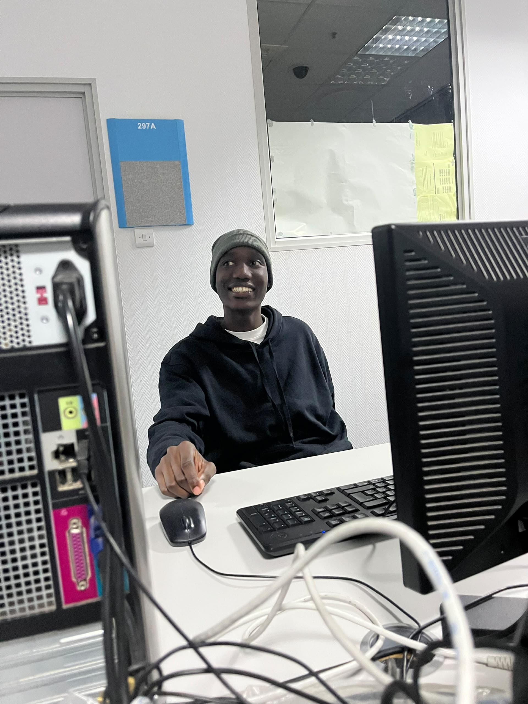

Academic Growth
Strengthening my understanding of statistics, business concepts and data-related principles while adapting to the demands of tertiary education.
Explore My Learning Journey →ACADEMIC PORTFOLIO & PROFESSIONAL DEVELOPMENT
I am a first-year Business Intelligence and Data Analytics student at Botswana Accountancy College, passionate about statistics, business and the potential of data to solve real-world problems.
My goal is to develop the analytical knowledge, technical skills and professional experience needed to transform information into meaningful insights and build a future in data analytics.
BIDA Student | Botswana Accountancy College | Year One

THE PERSON BEHIND THE DATA
Business Intelligence & Data Analytics
BEYOND THE CLASSROOM
My journey is about more than earning a qualification. It is about developing the mindset, discipline and practical abilities needed to contribute meaningfully in a data-driven world.
Strengthening my understanding of statistics, business concepts and data-related principles while adapting to the demands of tertiary education.
Explore My Learning Journey →Developing the ability to interpret information, recognise patterns and understand how evidence can support better decisions.
Explore My Skills →Preparing for future workplace opportunities through continuous learning, adaptability, perseverance and practical experience.
View My Professional Profile →WHERE I'M HEADED
I am particularly interested in the intersection of data analytics, business and the financial industry. I want to understand how organisations can use data to identify trends, evaluate performance, manage risks and make informed decisions.
As I progress through my studies, I aim to build a strong analytical foundation, gain relevant industry experience and eventually establish my own data analytics firm.
Explore My Career GoalsMY PROFESSIONAL DIRECTION
Build a strong foundation in business, statistics and data analytics.
Develop practical skills through coursework, personal projects and industry exposure.
Use data-driven thinking to support meaningful business decisions.
Work towards establishing an independent data analytics firm.
A LITTLE MORE ABOUT ME
I value perseverance and adaptability, and I believe that growth comes from remaining open to new ideas, learning from challenges and consistently working towards improvement.
Exploring the principles behind numbers, patterns and evidence-based reasoning.
Understanding how organisations operate, make decisions and create value.
Exploring the role of information and analysis in financial decision-making.
Swimming, football and gaming give me opportunities to unwind and enjoy life beyond my academic pursuits.
MY DIGITAL PORTFOLIO
This portfolio brings together my academic reflections, professional documents, developing skills and future ambitions in one place.
My educational background, skills, qualifications and professional strengths.
02 / REFLECTIONReflections on academic development, challenges and lessons learned.
03 / COLLABORATIONInsights into teamwork, communication and collaborative learning.
04 / CAPABILITIESEvidence of my developing technical knowledge and practical abilities.
THE JOURNEY CONTINUES
I am building my knowledge, strengthening my abilities and preparing for the opportunities ahead.